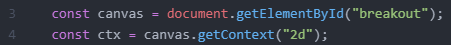
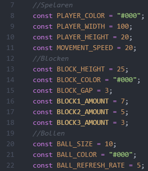

Kodgenomgång
Här kommer jag gå igenom koden från spelet bit för bit. Nedan kommer jag förklara allt bit för bit, med bilder från koden.
Importera canvas
Först importeras de 2 canvaselementen, och de döps till canvas, respektive ctx, vilket är standardnamn för dessa konstanter. De kommer sedan användas för att rita ut grafiken i canvas-fönstret.
Deklarera konstanter
Efter det så deklarerar vi de konstanter som kommer användas senare i programmet. Konstanter skrivs alla med stora bokstäver, vilket även underlättar läsbarheten för koden. Det som är bra med att ha alla konstantdeklarationer i början av koden är att det gör det enkelt att justera dess värden senare. Om vi till exempel vill att spelaren ska kunna röra sig snabbare behöver vi bara öka värdet för konstanten MOVEMENT_SPEED. Vill vi göra bollen lite större ökar vi bara värdet av BOLL_SIZE. Att ha värdena i konstanter gör det även lättare för oss att läsa koden senare, då ifall vi till exempel skriver 10 inte har någon aning om varför, medans om vi läser BALL_SIZE istället så förstår vi direkt vad som menasö.